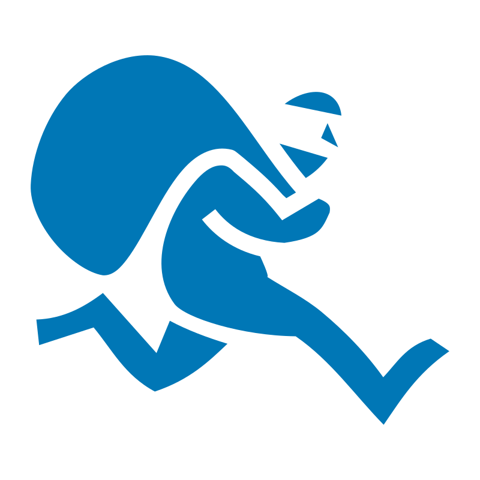

Game Overview
HUNTED is a real-time GPS-based pursuit game with players split into two teams: Hunters and Runners. Runners navigate through progressively smaller zones to reach their final target while evading Hunters who track and attempt to catch them by taking their photo.
The game runs to a clock. Each zone can only be captured during its own window - in a 60 minute game that is zone 1 from minute 0 to 10, zone 2 from 10 to 20, and the final zone from 50 to 60. Miss a window or get caught and your shield takes the hit. The second time either happens, you are out.
Every Runner is racing for the same final zone, hidden at a random point inside the target area when the game starts. Each Runner is led to it by their own zones, so two Runners are never shown the same circles - and no Hunter is told where it is, at any point.
Teams
Hunters
Track Runners in real-time and catch them by taking their photo. You MUST keep your app open at all times.

Runners
Navigate through zones to reach the final zone while staying hidden. Every Runner is racing for the same final zone, each by their own route in.
For Runners
Your Mission: Navigate through progressively smaller zones until you reach your final target zone to win.
How Zones Work:
- One final zone is hidden inside the Hunters' target area when the game starts, and every Runner is racing for it
- You'll close in on it through a series of zones that get smaller as you progress - from 800m down to 140m - each drawn around the final zone
- They don't line up perfectly: a zone can hang slightly outside the one before it, so the picture you build is close but never exact
- Your zones are drawn just for you, so another Runner's zones will sit somewhere different even though you are both heading for the same place
- The game is split into one window per zone. In a 60 minute game that is a zone every 10 minutes: zone 1 from minute 0 to 10, zone 2 from 10 to 20, and the final zone from 50 to 60
- To capture a zone you must be inside it with your app open while its window is running - being there at the wrong time counts for nothing
- Capture it early and the next zone is revealed straight away, so you can start moving, though it stays locked until its own window opens
- The header shows the zone you are on, a countdown to when it opens or closes, and how long is left in the game
- The zone circle is green while it can be captured, yellow while it is still locked
- Miss a window and it costs you a shield - then everyone moves on to the next zone together
Shields:
- Every Runner starts the game with one shield - a dog's life
- The shield is shared between the two ways of going out: missing a zone window and being caught
- The first of either takes your shield. The second, whichever it is, puts you out and you join the Hunters
- When a catch takes your shield you cannot be caught again for a few minutes (set by the host), so you have a chance to get clear
- Everyone can see who still has a shield and who is immune, in the menu player list and beside Runners on the map
Location Pinging:
- Your location is shared live with everyone in the game - Hunters and Runners - whenever you have the app open, and not at all while it is closed.
- Everyone else sees a trail of everywhere you've been seen in the last hour, plus an arrow showing which way you're moving - so choose your moments to open the app.
- You can see where other Runners and Hunters have pinged - use this intel wisely!
- If you're already inside a locked zone, stay hidden and wait for it to unlock before opening the app again
- Warning: Sitting still to stay hidden is how you miss a zone window - keep one eye on the countdown
Getting Caught: If a Hunter takes your photo, report it using the "I've Been Caught" button. If you still have your shield it takes the hit and you keep running, immune for the next few minutes. If your shield is already gone, you become a Hunter and join the pursuit.
Being a successful Runner is about staying hidden and timing your movements carefully. Lay low, watch the map, and move strategically.
For Hunters
- Keep your app open at all times
- View the target area and track Runner locations on your map in real-time
- Follow each Runner's trail from the last hour to predict their movements: solid lines are where they were seen, dotted lines are gaps while their app was closed, and an arrow shows which way they were last heading. Tap a dot to see when they were there. Each Runner has their own colour, shown next to their name in the menu.
- Catch Runners by taking their photo (share it in your group chat as proof!)
- A Runner's first catch only costs them their shield, and they are immune for a few minutes afterwards - the menu player list shows who still has a shield and who is immune, so you know who is worth chasing
- Runners are also on a clock: every zone window they miss costs them the same single shield
- Work together - Runners who go out become Hunters, growing your team
- The target area is the circle you drew at setup: the final zone is hidden somewhere inside it, so that is where everyone ends up. Runners' zones are drawn around the final zone and may reach outside it
- You are never shown any Runner's zones, or the final zone. Watch where they ping and where they head: they are all converging on the same place
Winning
Runners Win Individually: Each Runner who captures their final zone during its window is marked as having "won" - multiple Runners can win! The game carries on for everyone else. A Runner who has won stops sharing their location and stays on the map where they finished, marked 🏁, and can't be caught.
Hunters Win Together: If all Runners are out before any reach their final target, Hunters win as a team.
Time: The game ends when the final zone's window closes. Any Runner who hasn't captured their final target by then has run out of road.
Joining, Leaving and Losing Signal
- The host creates the room, joining it as a Hunter. Everyone else joins with the room name, a name of their own and a team. Capitals don't matter for either.
- Closing the app never takes you out. Nor does losing signal or your phone going to sleep. Open the app again and you are straight back where you were. The lobby shows anyone whose app is closed as "away". The clock doesn't stop for you, though: zone windows still close while your app is shut.
- Leave Lobby takes you out of the room before the game starts. If the host leaves, whoever has been in the room longest becomes host. If the last player leaves, the room closes and its name is free again.
- Leave Game during a game takes you out for good. A Runner who leaves is out of the running, shown as "Left the game" at the end. You can join again with the same name, but as a Hunter.
- The host can remove anyone from the lobby before the game starts, and only the host can start it. At least one Runner has to have joined first.
- A name is one player. If someone with the app open is already using your name, pick another one. If it's you on a different phone, close the app on the old one and join again with the same name.
- You can join a game that has already started. A Runner who does starts with a full shield, on whichever zone the clock is on.
After the Game
The game over screen shows how everyone finished - who made it home, who was caught, who missed a zone, who left and who ran out of time. Replay the Map opens the whole game on one map: every Runner's movements in their own colour, solid where they were seen and dotted where their app was shut, with the final zone revealed at last.
Safety Tips
- Always observe traffic laws and safety regulations
- Play only in public spaces - no trespassing
- Runners are caught by photo, not physical contact
- Respect others' privacy - keep photos within your game group
- Stay aware of your surroundings at all times
- Keep communication methods available for emergencies